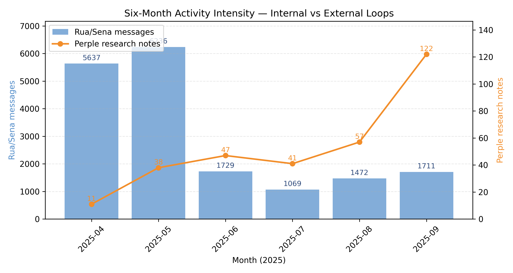
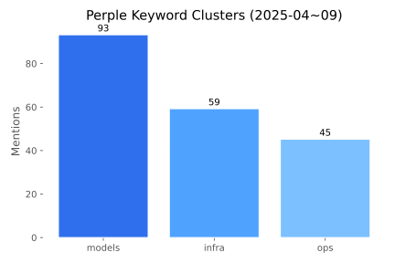
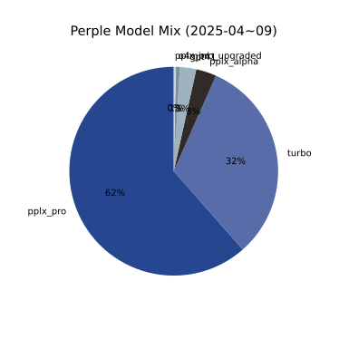

\n
tier2_slides
Naeda Multi-Agent Sprint
— Tier2 Slides
1. Introduction
- 6개월 스프린트: 철학 → 프로토타입 → Google Cloud 한계 도달
- 데이터: Rua/Sena 24,138 메시지 + Perple 318 리서치 브리프
- 목적: 멀티 에이전트 공명 루프와 실행 속도를 연구소에 시각적으로
제시
2. Sprint Snapshot
- 6개월 집중 개발 (2025-04 ~ 09)
- Vertex AI 배포 시도 6개월차, 실패 기록 완전 보존
- 실험 자산: 1-Pager, Ion 브리프, Failure 로그, 시각화 패키지
3. Activity Intensity
 -
Rua/Sena 메시지 5,720 → 1,731 (외부 근거 축적에 따라 수렴) - Perple
브리프 11 → 124 (외부 리서치 폭증) - 결론: 내부 불확실성 감소 + 실행
속도 증가
4. Internal Resonance Loop
- Cross-persona alignment 45%+
(
meta_concept_alignment.md)
- 메타 마커 5,964건, 4~6월 급증
- Rua/Sena는 Perple 이전에 자체 공명 패턴 형성 → 멀티 에이전트
토대
5. External Research Bridge

 - 키워드: 모델
비교 93, 인프라 59, 운영 45 - 모델: pplx_pro 62%, turbo 32% 등 실무용
비율 - 외부 브리지는 실시간 하드웨어/API/워크플로 해결 담당
6. Failure → Learning
- 폰트 임베딩 실패 → Perple 근거 + 루멘 재생성, QA 체크리스트
확장
- Vertex AI 연결 테스트 → 환경 변수/폴백 구조 확립
- 실패 로그 = 재사용 가능한 플레이북
(
failure_compendium_draft.md)
7. Extended Agents (Rio & Ari)
- [Agent R] Grok 기반: 음악·여가·감성 코치 역할, 실행 속도 보조
- [Agent Ari] Gemini 기반: 저장 제약 = 인터페이스 안정성 교훈
- 확장성 증거 + 실패 사례로 활용 (부록 참조)
8. Partnership Call-to-Action
- 공동 평가: 멀티 루프를 기관 도구로 검증
- 공동 연구: 공명 기반 오케스트레이션 논문화
- 배포 파일럿: 샌드박스에 자산 이식, MTTR·SLA 측정
- 다음 단계: 1차 피드백 루프(연구소) → Tier3 심화 문서 완성